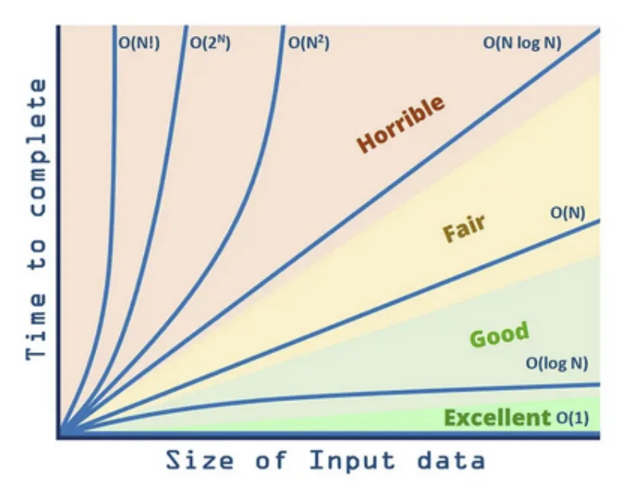

Time and Space Complexity
Contents
- Time and Space Complexity
- Big-O Notation
- Time Complexity
- Space Complexity
- Examples
- 1. Sum of Array
- 2. Print All Pairs in a List
- 3. Build a Prefix Sum Array
- 4. Merge Sort
- 5. Binary Search
- 6. Recursive Fibonacci
- 7. Fibonacci with Dynamic Programming (Memoization)
- 8. Matrix Path (Minimum Path Sum)
- 9. Sorting Algorithms
Time and Space Complexity
When analyzing an algorithm, we care about how efficient it is. Two main measures are:
| Type | What It Measures | Goal |
|---|---|---|
| Time Complexity | How long the algorithm takes (number of operations as input grows). | Make it as fast as possible. |
| Space Complexity | How much memory it uses (extra variables, data structures, recursion stack, etc.). | Make it as memory-efficient as possible. |
Big-O Notation
Big-O notation describes how fast the runtime grows as the input size grows. It doesn't care about exact counts, only the growth trend.
If algorithm 1 takes 2n + 2 steps, algorithm 2 takes 5n + 100 steps. Then as n becomes very large, both grow roughly proportionally to n. So both are O(n) (linear).
In Big-O, multiplicative constants and additive constants are dropped, they have no impact on how fast runtime scales with n. It describes rate of growth.
Time Complexity

We measure how the runtime grows as the input size n increases, it ignores constant factors and machine speed, only focuses on growth rate.
Common complexities:
| Complexity | Example | Description |
|---|---|---|
| O(1) | Accessing an array element | Constant time — doesn’t depend on n. |
| O(log n) | Binary search | Each step cuts problem size in half. |
| O(n) | Linear search, traversing a list | Grows directly with input size. |
| O(n log n) | Merge sort, quicksort | Common for efficient sorting. |
| O(n²) | Nested loops | Grows quadratically (e.g., comparing all pairs). |
| O(2ⁿ) | Recursive subset generation | Exponential — grows very fast. |
| O(n!) | Permutation generation | Factorial growth — impractical for large n. |
Space Complexity
Space complexity counts extra memory used by the algorithm, not including the input itself.
Example
def sum_array(arr):
total = 0 # one variable
for num in arr:
total += num
return total
- Time complexity: O(n), loops once aver
arr - Space complexity: O(1), only uses 'total', constant extra space.
Example Comparison:
| Algorithm | Time Complexity | Space Complexity |
|---|---|---|
| Binary Search | O(log n) | O(1) |
| Merge Sort | O(n log n) | O(n) |
| Quick Sort | O(n log n) average, O(n²) worst | O(log n) |
| BFS / DFS on Graph | O(V + E) | O(V) |
| Dynamic Programming | O(n) to O(n²) | O(n) or more |
Examples
1. Sum of Array
def sum_array(arr):
total = 0
for num in arr:
total += num
return total
Time complexity: We count how many basic operations happen as the input size grows
def sum_array(arr): # Operation count
total = 0 # 1
for num in arr: # n
total += num # n
return total # 1
Total = 2n + 2, drop constants, O(n) liner time complexity.
Space complexity: We count extra variables created by the algorithm.
total1 variable,num1 variable. Both are constant size, independent ofn.
Space complexity = O(1), constant space.
2. Print All Pairs in a List
def print_all_pairs(arr): # Operation count
for i in range(len(arr)): # n
for j in range(len(arr)): # n
print(arr[i], arr[j])
Time complexity: Total operations is n^2, so time complexity is O(n^2) (quadratic time)
Space complexity: It only uses the loop variables i,j, no new data structure, so space complesity is O(1), constant.
3. Build a Prefix Sum Array
def prefix_sums(arr): # Operation Count Extra Space Used
prefix = [] # 1 n
current_sum = 0 # 1 1
for num in arr: # n
current_sum += num # n
prefix.append(current_sum) # n
return prefix # 1
Time complexity is O(n).
Space complexity is O(n).
When algorithm creates new data proportional to the input size, both time and space often scale linearly O(n).
4. Merge Sort
def merge_sort(arr):
if len(arr) <= 1:
return arr
mid = len(arr) // 2
left = merge_sort(arr[:mid])
right = merge_sort(arr[mid:])
return merge(left, right)
def merge(left, right):
merged = []
i = j = 0
while i < len(left) and j < len(right):
if left[i] <= right[j]:
merged.append(left[i])
i += 1
else:
merged.append(right[j])
j += 1
merged.extend(left[i:])
merged.extend(right[j;])
return merged
Time complexity:
- Splits array in half (log_2 n levels)
- Merges all elements once per level (n)
T(n) = n logn
Space complexity:
- Each merge creates a temporary list
mergedof size n, even though recursion creates multiple sublists, they exist on different recursion levels, not all at once. O(n)
Divide-and-conquer algorithms like merge sort spend log n levels of recursion, each processing n elements, so O(n log n).
5. Binary Search
def binary_search(arr, target): # Operation
low, high = 0, len(arr) - 1 # 1
while low <= high: # O(log n) — halves range each loop
mid = (low + high) // 2 # 1
if arr[mid] == target: # 1
return mid # 1
elif arr[mid] < target: # 1
low = mid + 1
else:
high = mid -1
return -1
Time and Space both are: O(log n)
Halving repeatedly, log n growth. Binary search is one of the best examples of logarithmic time, extremely efficient on large sorted data.
6. Recursive Fibonacci
def fibonacci(n):
if n <= 1:
return n
return fibonacci(n-1) + fibonacci(n-2)
Time complexity: each call spawns 2 more recursive calls, exponential growth, O(2^n) Space complexity: O(n), recursion depth reaches n.
7. Fibonacci with Dynamic Programming (Memoization)
def fibonacci_memo(n memo={})
if n in memo:
return memo[n]
if n <= 1:
return n
memo[n] = fibonacci_memo(n - 1, memo) + fibonacci_memo(n - 2, memo)
return memo[n]
Time complexity: Each number is computed once, then cached.
Space complexity: memo stores up to n results, recursion depth = n.
8. Matrix Path (Minimum Path Sum)
Given a grid of non-negative numbers, find the path from top-left to bottom-right with the minimum sum, moving only right or down.
def min_path_sum(grid):
m, n = len(grid), len(grid[0])
dp = [[0]*n for _ in range(m)]
dp[0][0] = grid[0][0]
for i in range(1, m):
dp[i][0] = dp[i-1][0] + grid[i][0]
for j in range(1, n):
dp[0][j] = dp[0][j-1] + grid[0][j]
for i in range(1, m):
for j in range(1, n):
dp[i][j] = grid[i][j] + min(dp[i-1][j], dp[i][j-1])
return dp[m-1][n-1]
| Measure | Complexity | Why |
|---|---|---|
| Time | O(m × n) | Fill every cell once |
| Space | O(m × n) | DP table of same size (can optimize to O(n)) |
9. Sorting Algorithms
| Category | Algorithm | Average Time | Space | Stable | Notes |
|---|---|---|---|---|---|
| Simple (O(n²)) | Bubble Sort | O(n²) | O(1) | ✅ | Repeatedly swaps adjacent elements |
| Selection Sort | O(n²) | O(1) | ❌ | Finds min each pass | |
| Insertion Sort | O(n²) | O(1) | ✅ | Good for small or nearly sorted data | |
| Efficient (O(n log n)) | Merge Sort | O(n log n) | O(n) | ✅ | Divide & Conquer, always stable |
| Quick Sort | O(n log n) avg O(n²) worst |
O(log n) | ❌ | Fast in practice; in-place | |
| Heap Sort | O(n log n) | O(1) | ❌ | Uses binary heap | |
| Linear (O(n)) special cases | Counting Sort | O(n + k) | O(k) | ✅ | Works only for integers in range |
| Radix Sort | O(d·(n + k)) | O(n + k) | ✅ | For integers/strings by digit | |
| Bucket Sort | O(n + k) | O(n + k) | ✅ | For uniformly distributed numbers | |
| Other / Hybrid | Shell Sort | ~O(n¹·³) | O(1) | ❌ | Improved insertion sort |
| Timsort | O(n log n) | O(n) | ✅ | Python’s built-in sort algorithm (hybrid of merge + insertion) |